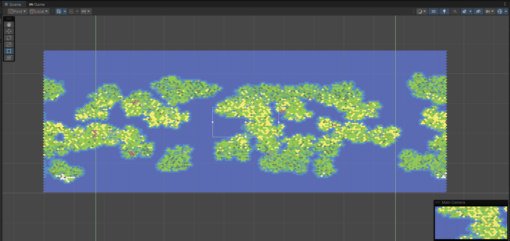
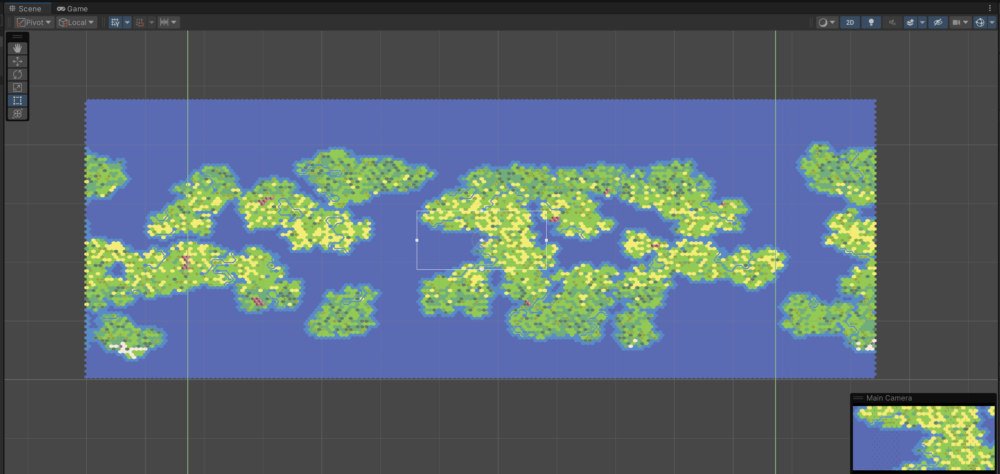

Description
My video game is a multiplayer strategy game inspired by titles such as Crusader Kings 2, RimWorld, and Civilization 5. It offers a rich blend of crafting, settlement building, exploration, politics, and questing. The game allows players to shape their world through strategic decisions and interactions. As players progress towards the end game, they gain access to powerful, console command-like abilities, such as creating custom NPCs, ultimately transforming into god-like figures within the game. This unique twist provides an exhilarating experience as players transition from humble beginnings to wielding immense power and influence over their virtual realms.
Randomized World Map Generation
The game features a sophisticated randomized world generation system, where each world is created using a unique seed, ensuring a distinct and immersive experience every time. Players can configure landmass size and frequency to tailor the environment to their preferences. Additionally, the game incorporates biomes tied to latitude, providing a layer of realism as different regions of the world exhibit varying climates and ecosystems. This dynamic world generation not only enhances replayability but also offers a diverse and authentic landscape for players to explore and conquer.

 

World Map Camera
The game's camera controls allow players to focus on specific parts of the map, providing detailed views of their settlements and activities. Additionally, the camera wrapping feature creates the illusion of a round world, enabling seamless circumnavigation and enhancing the immersive experience.
World Map Editor
The world map editor empowers players to modify randomly generated maps or start with a blank ocean map to create their own custom world. This feature provides flexibility and creativity, allowing players to design unique landscapes and tailor the game environment to their preferences.
Character Creator
This character creator menu is an early interface for the CRUD interactions with a locally hosted PostgreSQL database. In the final version of the game, thousands of characters and their familial relationships per session will be managed via PostgreSQL.